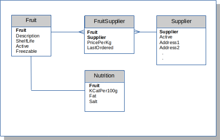
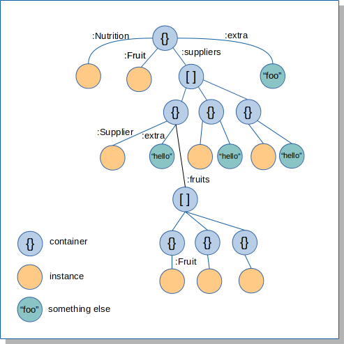

entity-core
A Clojure library for defining domain types, their keys and persistence bindings. Can be used with entity-sql when the persistence mechanism is a SQL database. Uses typeops to maintain purity of domain type instances.
Types are denoted by name-spaced keywords; scalars, enums and entities are supported.
See also entity-txn for lifecycle management and transactions
Define Scalars
(ns fruits.model.common
(require [entity.core :refer :all]))
(defscalar :fin/Money 0.00M) ; type is decimal accurate to 2dp
=> :fin/Money
(defscalar :foo/LongName "") ; type is string
=> :foo/LongName
(defscalar :foo/NumDays 0) ; type is long
=> :foo/NumDays
(defscalar :foo/DateTime (java.util.Date.))
=> :foo/DateTime
Define Enums
Enums define keyword to value mappings and a default value
(defenum :foo/Freezable {:y "Y"
:n "N"} :y)
(defenum :foo/Active {:y 1
:n 0} :y)
Define Entities
(ns fruits.model.fruit
(require [fruits.model.common] ; drag in common types
[fruits.model.config :refer [*fruit-db* fruit-db-opts]]
[entity.sql.hug :as sql]
[entity.core :refer :all]))
(defentity :foo/Fruit
[Fruit ""
Description :foo/LongName = nil
ShelfLife :foo/NumDays
Active (enum-val :foo/Active :y)
Freezable (enum-val :foo/Freezable :n)]
[Fruit]
:keys {:all {:unique? false
:cached? true
:fields []}
:by-freezable {:unique? false
:cached? true
:fields [Freezable]}
:filter {:unique? false
:cached? false
:fields [Fruit
Active :as FruitActive]}}
:io (sql/bind-connection *fruit-db* "sql/fruit.sql" fruit-db-opts)
:create (fn [instance] (comment stuff))
:mutate (fn [old new] (comment stuff))
:join (fn [instance] (comment stuff))
:destroy (fn [instance] (comment stuff)))
The fields of an entity is a vector of names and types (or values that infer the type), with an optional default value. If no default value is present the field takes the value of the type reference. Values (inferring the type or the default) can be a literal, reference to a scalar or an expression.
Every entity must have a primary key, which defines its uniqueness in the application domain. This is a vector whose content must be names of fields the entity defines. All other elements are optional.
An entity is implemented as a record: (defentity ...) will emit (defrecord ...) for the specified fields.
Defining Keys
Any number of additonal keys, unique or otherwise, can be defined using the :keys argument. This is a map defining the fields, uniqueness and cached status of each key
NOTE:
unique?andcached?are not presently used.
The example above defines the key :filter as having two fields, both native to the entity. Active is renamed in the key as FruitActive. This is to cater for those cases where the underlying retrieval mechanism joins between entities that both define a field called Active. Consider the following example:

Perhaps we want to define a :filter key to support queries for FruitSupplier instances, wild-carding the fruit and supplier, according to whether a fruit and supplier is active and whether an order was placed in a particular date range. This would be declared like so:
:keys {
.
.
:filter {:unique? false
:cached? false
:fields [Fruit
Supplier
:foo/Fruit.Active :as FruitActive
:foo/Supplier.Active :as :SupplierActive
LastOrdered :as FromDate
LastOrdered :as ToDate
:foo/Fruit.Freezable
:foo/Fruit.ShelfLife :as MinShelfLife
:foo/Fruit.ShelfLife :as MaxShelfLife]}
The SQL to apply this key could be:
SELECT
FS.Fruit AS "Fruit",
FS.Supplier AS "Supplier",
FS.PricePerKg AS "PricePerKg",
FS.LastOrdered AS "LastOrdered"
FROM FruitSupplier FS,
Fruit F,
Supplier S
WHERE F.Fruit = FS.Fruit
AND S.Supplier = FS.Supplier
AND (FS.Fruit = :Fruit OR :Fruit IS NULL)
AND (FS.Supplier = :Supplier OR :Supplier IS NULL)
AND (F.ShelfLife >= :MinShelfLife OR :MinShelfLife IS NULL)
AND (F.ShelfLife <= :MaxShelfLife OR :MaxShelfLife IS NULL)
AND (F.Active = :FruitActive OR :FruitActive IS NULL)
AND (S.Active = :SupplierActive OR :SupplierActive IS NULL)
AND (F.Freezable = :Freezable OR :Freezable IS NULL)
AND (FS.LastOrdered >= :FromDate OR :FromDate IS NULL)
AND (FS.LastOrdered <= :ToDate OR :ToDate IS NULL)
All keys, including the :primary, return instances of the entity only. Any aggregations with other domain data types should be expressed by associating related instance(s) via their position in a dynamically constructed data graph.
By default, key field values are nil. typeops is used to enforce the correct types for field values set its definition of assoc.
(make-key
:foo/FruitSupplier
:filter
{})
=>
{:ToDate nil,
:MaxShelfLife nil,
:Freezable nil,
:MinShelfLife nil,
:Supplier nil,
:FruitActive nil,
:SupplierActive nil,
:Fruit nil,
:FromDate nil}
In order for the types to be known, fields declared using references to other types, like foo/Supplier.Active, require those entities to be present when the key is used.
Key fields can be defined with a default value other than nil:
.
.
foo/Supplier.Active :as SupplierActive = (enum-val :foo/Active :y)
.
The Mighty (aggregate)
In any data model there are many relationships between the various entities. When defining a part of the processing model, a subset of those relationships will be navigated to build an appropriate structure, expressing them by the relative positions of the instances: - siblings in a map: 1-to-1 - nested vector: 1-to-many
Consider the following example

The second-level maps allow relationships to be expressed at that level, an so on deeper into the structure.
This structure can be built using aggregate like this:
(-> {}
(aggregate :to :foo/Fruit :key-val {:Fruit "Strawberry"})
(aggregate :to :foo/Supplier
:from [:Fruit]
:instance-name
:Supplier
:set-name :suppliers
:key-val :by-fruit)
(aggregate :to :foo/Nutrition
:from [:Fruit]
:for-each (fn bar [v] (assoc v :extra "foo")))
(aggregate :to :foo/Fruit
:for-each (fn foo [v] (assoc v :extra "hello"))
:from [:suppliers > :Supplier]
:key-val :by-supplier
:set-name :fruits))))
This is saying - starting at the :Fruit Strawberry - aggregate all the suppliers of Strawberry - add in also Strawberry’s associated :Nutrition info and at the same time the additional thing "foo" - aggregate each :Supplier’s inventory of :Fruits and at the same time the additional thing "hello"
The (aggregate data & opts) function is the way to build data graphs from your entity model that express the relationships required by whatever part of the processing model you are currently concerned with.
opts are as follows:
-
:from patha vector path to the thing being aggregated from. This is only absent when seeding the structure with its initial value (or vector of values, in the case of a non-unique key). When passing through a vector in the structure indicate this using> -
:to type-refmandatory - the type being joined in the structure. -
:key-valwhen:fromis present, by default it will be used as the value for the target type’s:primarykey, however this behaviour is overridden by key-val, which may be either the return value of make-key or a vector tuple of[key-name key-value], a keyword identifying a known key or a function (see below). -
:instance-namethe map key to use when placing single instances in the structure. This applies whether the key being applied is unique or not. The name will be used in all map children housing each instance. Optional and if absent the unqualified name or any alias is used. -
:set-namethe map key for the vector returned by non-unique keys when placed in the parent map. Mandatory when a non-unique key is being used, otherwise ignored. -
:mergeAny existing value will always be replaced by a new one. In the case of a non-unique key, an existing vector will be replaced unless this option specifies either:primaryor a function. The option of:primarywill merge current and new values into the result vector by the primary key set. A function must accept three arguments, the instance-name, current and new vectors, and return a vector containing the required merge. -
:must-joinIf true, when aggregating to a vector, the map child will be removed for any instances that don’t join with the target. Otherwise the vector entry remains with a nil child where there is no join. -
:for-eachA function called after the aggregation. Will be passed the parent node and must return the new child.
I/O Mechanisms
The entity-sql library implements core’s IO protocol and provides the bind-connection macro to bind entities to SQL databases.